neatHack 2026, for judges: Check Every FirstRun Claim in 60 Seconds
Behind Every Run, neatlogs Watched, Entire Recorded and cfo.ai Priced

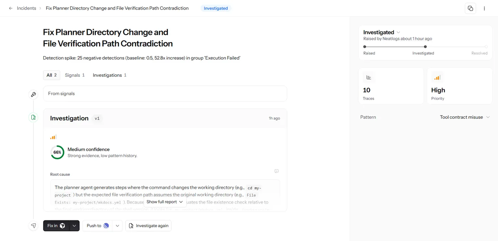
 neatlogs Caught the Agent Getting It Wrong
neatlogs Caught the Agent Getting It Wrong
- 132traces, one per run, $0.9071 in total
- 52.8xspike in failed steps, traced to its cause at 66% and fixed in commit 2de852f
- 46 of 52runs where the neatlogs AI judge named the right failed step

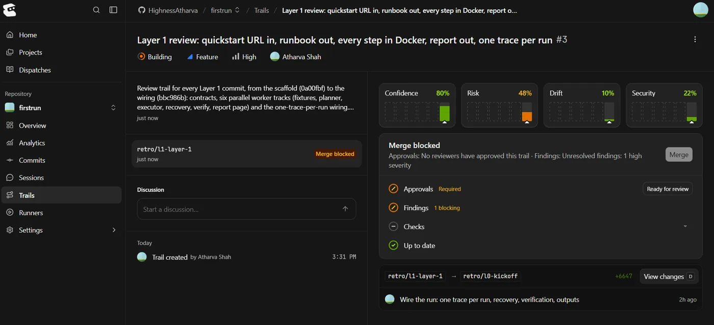
 Entire Recorded the Session Behind Each Commit
Entire Recorded the Session Behind Each Commit
- 91 of 132commits carry an Entire checkpoint
- 3real bugs found by Trail reviews, all fixed
- 1merge blocked by Trail 3 on a high severity finding

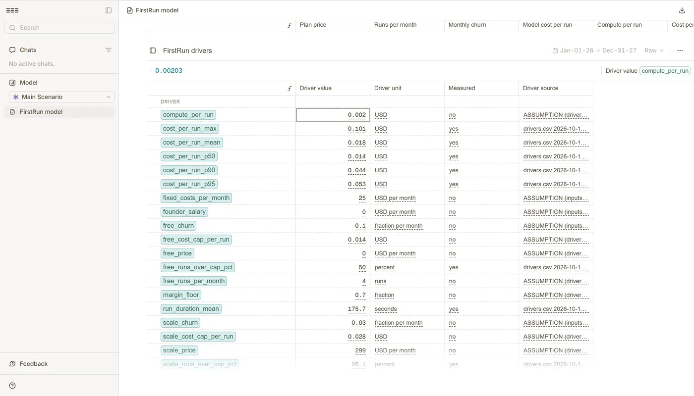
 cfo.ai Turned Measured Cost Into Each Plan's Cap
cfo.ai Turned Measured Cost Into Each Plan's Cap
- $0.01782average run, measured over 88 traces
- Month 14when the old $0.50 cap runs out of cash
- 70%margin sets each cap: Team $0.04697, Scale $0.02787
All 7 Official Evidence Rows Have Proof You Can Open
1The agent improved“A run before your change and a run after it, e.g., two neatlogs traces, with the numbers you compared”
In repo2 of 4 finished, then 3 of 4. 8 traces
2You used neatlogs“Links to neatlogs traces from your project, or screenshots of them”
Screenshots10 dashboard screenshots. See them
3You used Entire“Checkpoints or entire-graph output from your repository”
Public91 of 132 commits carry a checkpoint. the checkpoint commit
4You used cfo.ai“A business plan covering your agent's pricing, costs, revenue and runway”
PublicAll four, in a public model. cfo.ai model
5The agent recovers from failures“A run where an action failed, showing what the agent did next”
In repoStep 1 failed, then 4 of 4 passed clean. the recovered run 5520c5cf
6You built in public“Links to what you shared during the hackathon, tagged #neatHack”
Public11 tagged posts, 9 after kickoff. See them
7You wrote the code during the hackathon“A public repository with commits dated during the hackathon”
PublicFirst commit 12:34 IST, kickoff 12:30. 96541a8
- Trace pages need a neatlogs login. Read the recovered trace in the repo, and screenshots stand in for the rest.
The Agent Runs a Quickstart Start to Finish, and v2 Beat v1
Same 4 quickstarts, v1 against v2
Recovery in trace 5520c5cf
step.1failed: curl: command not foundrecover.1installed curlstep.2failed: ~/.local/bin not on PATHrecover.2added it to PATHverifyfresh container, 4 of 4, no model calls
Show details
Every part of a run points to code
- Plan: copies each docs command. planner.py
- Tools: Firecrawl, Docker and Jev. classify.py
- State: saved after every step. state.py
- Context: reads only the quickstart page. planner.py
- Run: one fresh container per run. executor.py
- Recover: classify, patch, retry, 3 tries. recovery.py
- Verify: second container, no model calls. verify.py
- Ask once: a human is asked only below 0.7 confidence. recovery.py precedents.py
All six numbers
| Metric | v1 | v2 |
|---|---|---|
| Finished, passed or verified | 2 of 4 | 3 of 4 |
| Failed steps recovered | 0 | 3 |
| Fixes verified clean | 0 | 1 |
| Tool calls per run | 4.25 | 6.0 |
| Cost per run | $0.0262 | $0.0200 |
| Run time, verify included | 128 s | 201 s |
List price, not billed. The fix is commit 3ca6f11. Trace IDs: neatlogs.md. The trace status reads ERROR because a failed step rolls up, but the run ended verified.
neatlogs Improved the Agent, Entire Recorded the Build, cfo.ai Planned the Business
neatlogs
A 52.8x spike led to fix 2de852f.
Open neatlogs.mdTrace pages need a neatlogs login, so the screenshots below stand in.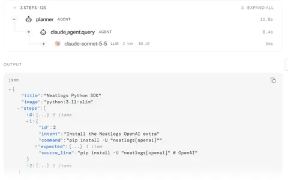
N1One run is one trace
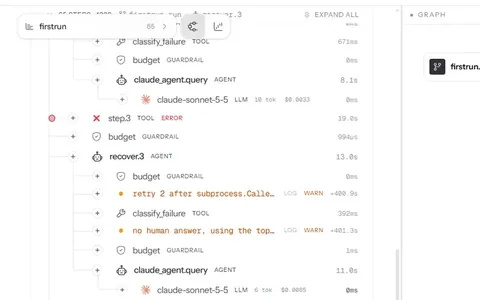
N2A recover.3 span retries a step
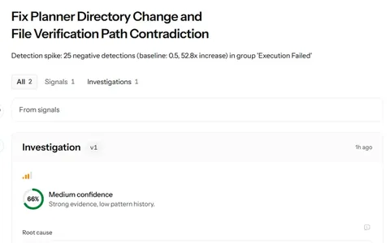
N3Investigate: 52.8x spike, cause at 66%
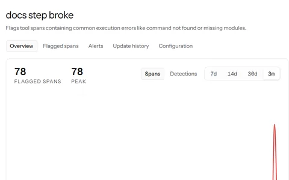
N4Detection "docs step broke": 78 flagged spans
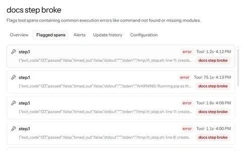
N5Flagged spans, 40 at capture time
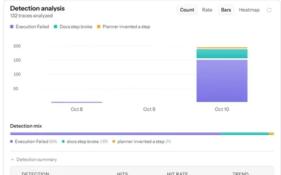
N6Detection analysis over 132 traces
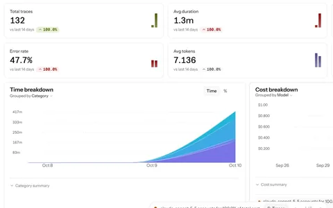
N7Analytics: 132 traces, $0.9071 total cost
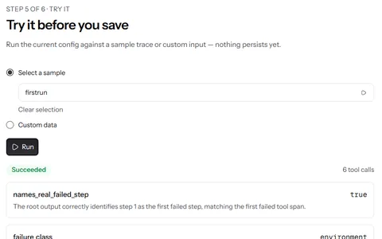
N8AI judge on trace 5520c5cf: right step
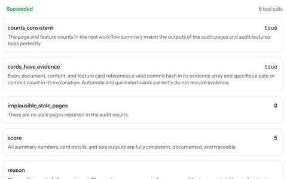
N9AI judge on audit 4e936e06: 5 of 5
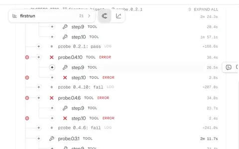
N10Bisect trace: jafgen 0.4.6 first bad


Entire
91 of 132 commits carry a checkpoint.
Open a checkpointNo login needed. Trails need an Entire login, so the screenshots below stand in.graph.ndjson- 91 with a checkpoint
- 4 setup commits
- 37 site commits
- git log on main up to f5d73eb, 2026-10-11
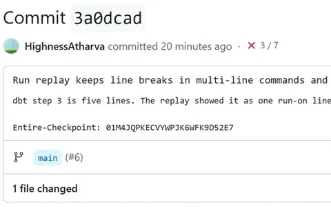
E1Commit 3a0dcad carries its checkpoint
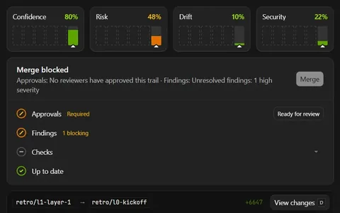
E2Trail 3 blocked merge on a high finding
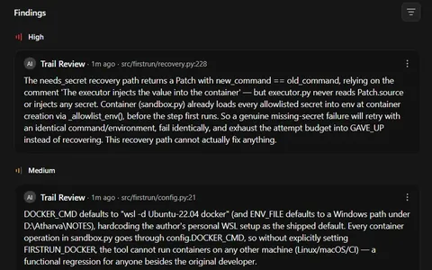
E3Trail 3 review: 1 high, 1 medium
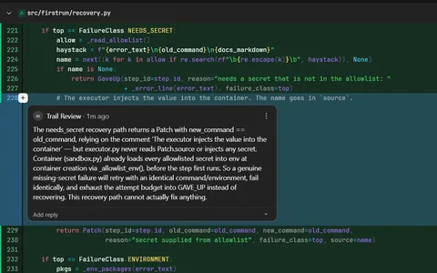
E4Inline review on recovery.py line 228
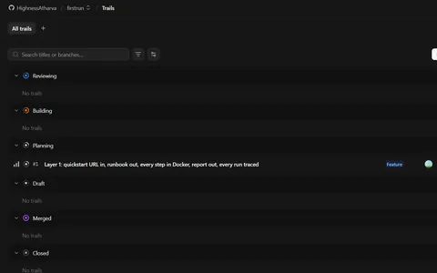
E5Entire Trails board with trail #1
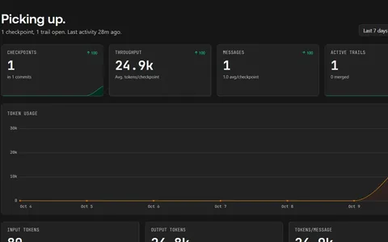
E6Entire analytics after the first checkpoint


cfo.ai
The old $0.50 cap runs out of cash in month 14.
Open the cfo.ai modelPublic, no login needed.BUSINESS_PLAN.mdFree
$0
- Cap a run
- $0.01355
- Margin
- no revenue
Team
$49
- Cap a run
- $0.04697
- Margin
- 87.8%
Scale
$299
- Cap a run
- $0.02787
- Margin
- 80.1%
How it earns: DevRel and docs teams pay a monthly tier, Free, Team $49 or Scale $299. Plan, no paying customers yet. BUSINESS_PLAN.md
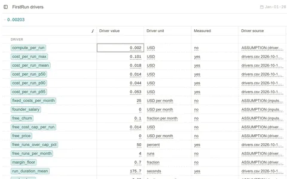
C1Costs measured from 88 traces
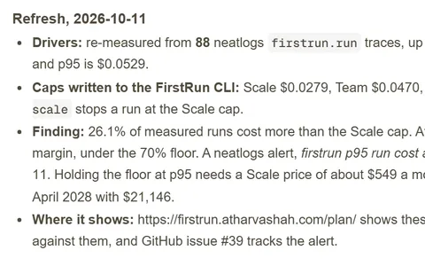
C2Caps written to the CLI, 2026-10-11
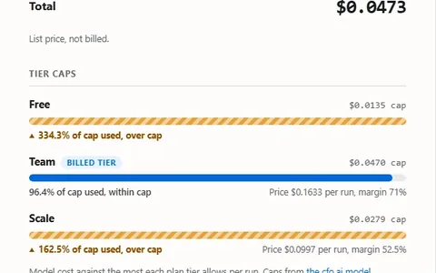
C3Receipt: $0.0453, 96.4% of Team cap
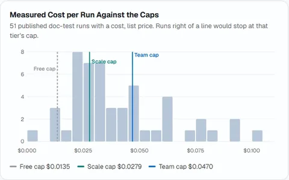
C451 runs' cost against the 3 caps
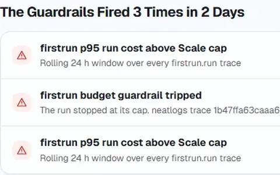
C5Cap alerts fired 3 times in 2 days


Show details
neatlogs
An AI judge named the right failed step in 46 of 52 runs. The audit judge averaged 4.87 of 5 over 15 audits. Scores
Investigate traced invented planner steps to the prompt, and commit 3ca6f11 fixed them. Investigate result
N1, N2 and N5 to N7 come from the dashboard on Oct 10. The repo does not record their trace IDs.
cfo.ai
| Scenario, from $5,000 | Month 18 cash | Runway |
|---|---|---|
| Base, $2,069 a month revenue | $16,685 | No limit |
| Every run at $0.05286 | $12,503 | No limit |
| Scale at $529 | $21,146 | No limit |
| Old $0.50 Scale cap | -$12,212 | Below $0, month 14 |
Average run $0.01782 over 88 traces. Each cap keeps a 70% margin. Revenue per run: Team $0.1633, Scale $0.0997. No customer has paid yet. The PR 15 run stopped at the Free cap of the time, $0.0108. PR 15 cfo-model.json
Entire output from the repo
A checkpoint on the planner fix commit3ca6f11
$ git log -1 --format="%h %s%n%(trailers:key=Entire-Checkpoint)" 3ca6f11
3ca6f11 Planner fix from neatlogs Investigate: copy commands only, guard against invented steps
Entire-Checkpoint: 01M4JGJ6NTE7YNB9Z0YW5FYVHNentire-graph output, last line, trimmedgraph.ndjson
$ tail -1 evidence/graph.ndjson
{"record_type": "summary", "stats": {"files": 102, "symbols": 1587, "relations": 4644, "completeness_level": "ok"}}Of the 41 commits without a checkpoint, 4 came before the first session. On many of the 37 site commits the Entire hook hung and was stopped. Trail reviews found 3 real bugs, all fixed. Findings. The Entire judge plugin scored 3.93 of 5, integrity 5.0, and flags thin commit-to-session coverage. jury-selftest.txt
The 2:54 Film Gives Each Tool Its Own Chapter
 2:54
2:54
Show details
| Part | neatlogs | Entire | cfo.ai |
|---|---|---|---|
| Architecture | 1:10One run is one trace. | 1:57A checkpoint per commit. | 2:22Costs come from traces. |
| Implementation | 1:16One init call. | 2:00One command, before commit 1. | 2:25Ari built 6 Scenarios. |
| Runtime | 1:18A budget check before recovery. | 2:03The fix session, prompt by prompt. | 2:31Every Scale run at $0.50. |
| Reasoning | 1:2552.8x incident, cause at 66%. | 2:08Trails found 3 real bugs. | 2:34Cash runs out, month 14. |
| Result | 1:41Commit 2de852f fixed it. | 2:1368 checkpoints on GitHub. | 2:37A 2.8 cent cap stopped a run. |
Chapters are the video's own: 0:00 problem, 0:12 dbt guide, 0:36 Docs Bisect, 0:57 the 4 PRs, 1:07 neatlogs, 1:51 Entire, 2:19 cfo.ai, 2:43 its own README. Times in the table come from the captions.
11 Posts Tagged #neatHack Show the Build as It Happened
10 on X, 1 on LinkedIn. Green: after kickoff.
Show all 11 posts
my neatlogs hackathon project has already caught doc issues
Xbuilt this weekend at #neatHack
X#neatHack kickoff, 12:30 IST
X#neatHack, day one. all three required tools are up
Xyour quickstart is the only part of your product
Xa quickstart breaks the way an agent breaks
Xsend me your quickstart and FirstRun runs it
X4 docs PRs opened on day one of #neatHack
XNever let an AI agent fix every failure on its own
LinkedInan agent that heals every failure on its own drifts
Xa maintainer who gets a PR from an agent asks one question
X
FirstRun Found 4 Real Docs Bugs and Sent 4 Upstream PRs
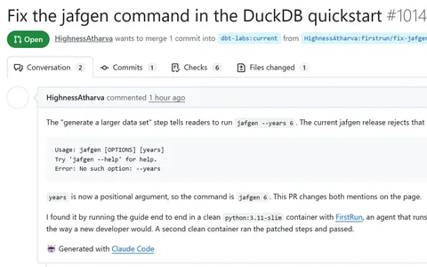
P1dbt #10149: jafgen --years is gone
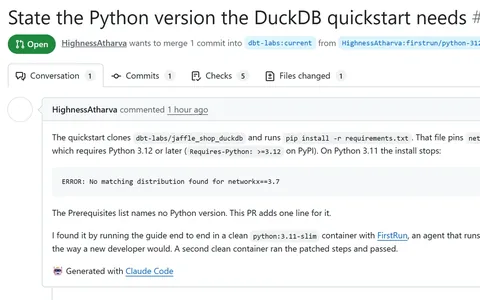
P2dbt #10150: guide needs Python 3.12
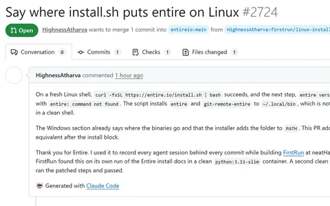
P3Entire #2724: entire not on PATH
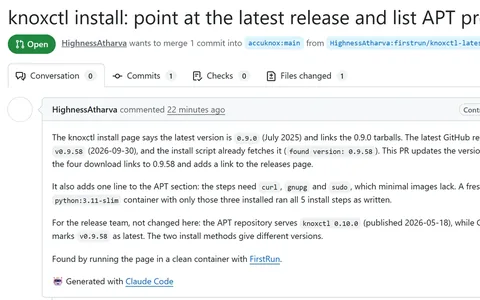
P4AccuKnox #671: latest is 0.9.58, not 0.9.0


Show details
All 4 PRs are open. Each came from a run verified in a fresh container.
firstrun receipt --check fails when a receipt or its evidence changed. A run receipt An audit receipt Receipts re-issued Oct 11 from saved run state.
Each Doc-audit board maps who works on what, from 14 to 247 people. dbt-core shows 15 stale pages and 72 features with no docs. dbt-core board
Older audits show an estimated cost, $0.0001 to $0.0055. How it is measured
Five Things Broke While Building, and Each One Has a Number
- 206 sGit 2.33 hung the Entire hook.
- 3traces from one run, now one.
- 50empty traces per test run, now 0.
- 39%higher cost count than neatlogs.
- 2Dagster gaps already documented, no PR.
Verify the Repo From Your Own Terminal
$ git clone https://github.com/HighnessAtharva/firstrun && cd firstrun $ git log --reverse --date=iso --format="%h %ad %s" | head -3
First line: 96541a8 2026-10-10 12:34:51 +0530
$ git log --no-merges --format="%(trailers:key=Entire-Checkpoint,valueonly)" | grep -c . $ git rev-list --no-merges --count HEAD
91 and 132 on main up to f5d73eb, 2026-10-11. Both grow.
$ pip install -e ".[dev]" && pytest -q
No keys needed. 65 live tests skip. Actions
$ pip install git+https://github.com/HighnessAtharva/firstrun $ firstrun https://docs.example.com/quickstart
Python 3.11, Git, Docker, a Claude token. README